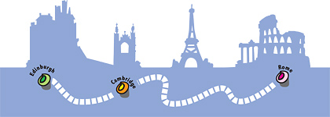
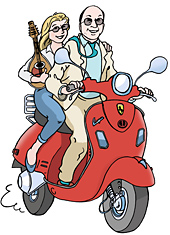

|
|
| Home |
| The company |
| Newsletter |
| Edinburgh Fringe |
| What the press say |
| What you say |
Captain Corelli’s Cambridge Cancer Clubor ...To Rome and Back on a Bright Red VespaThe story so far... It’s 2008 and we’re on the road doing Captain Corelli’s Mandolin. In the Victoria Hall in Settle Mike has to tell the team that he’s got bowel cancer and he’s going into Addenbrookes to get it fixed. The operation is on July 23rd. The surgeon discovers a secondary on Mike’s pancreas. Three months later at The Curve in Leicester Ali has to tell the team that she’s got cervical cancer and is going to have a course of chemotherapy and radiotherapy at Addenbrookes. A month later, at The Little Biggar Festival Mike tells the team that he’s going back to Addenbrookes for another operation on November 2nd She brings her mandolin to Mike’s ward to give a recital and ‘Captain Corelli’s Cambridge Cancer Club’ is born. We decide to raise £100,000! Please come and join in! It’s easy!Go to our website www.ccccc.uk.com where you'll find details of how to donate. The charities are: The KIS Endowment is based in Edinburgh and funds research into the treatment of bowel cancer – they are doing research right now into the very drugs that Mike is taking. MacMillans Cancer Support provide fantastic support for cancer suffers in many ways including advice, website, information and extremely handy booklets covering just about every aspect of cancer. Ali was really helped in the early days by booklets, readily available information and support given by MacMillans. The Addenbrookes Charitable Trust is for the hospital where Mike and Ali were treated. This is personal! We'd like your e-mail address because whatever you give – doesn’t matter how much or how little - we’d like to send you bulletins and photographs. That way you can ride on the back of Mike’s Vespa all the way to Rome and back in complete safety! If you can manage £50 Mike will send you a postcard from somewhere on the journey. If you can manage £100 Mike will send you two postcards – and so on. What do you think? It’ll be a lot of fun and if we all get together on this – we could raise the kind of money that makes a difference. There will be a ceremonial presentation of cheques at special gala performances of Captain Corelli’s Mandolin at The Storytelling Centre in Edinburgh on November 7th and at The Mumford Theatre in Cambridge on November 28th. If you can catch us at either of those performances, or anywhere else, do come and say hallo to us after the show. Ciao!  |
|  |
| Donate now - details at www.ccccc.uk.com |
| In aid of Macmillan Cancer Support, Addenbrookes Charitable trust, and the KIS Endowment Fund |